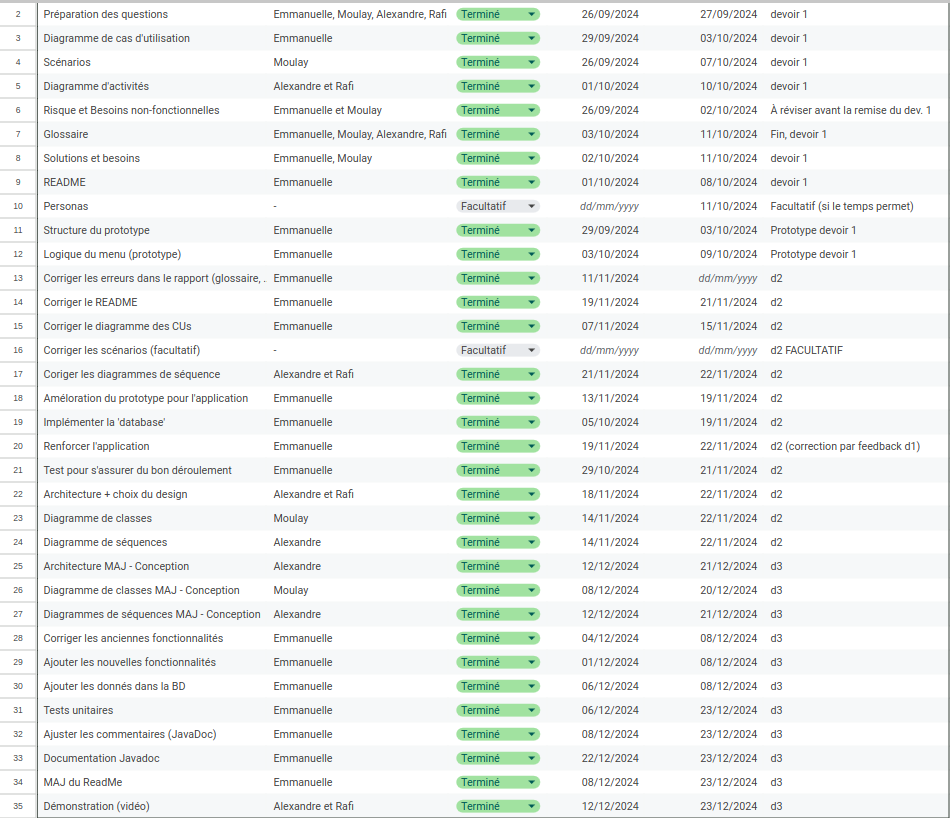
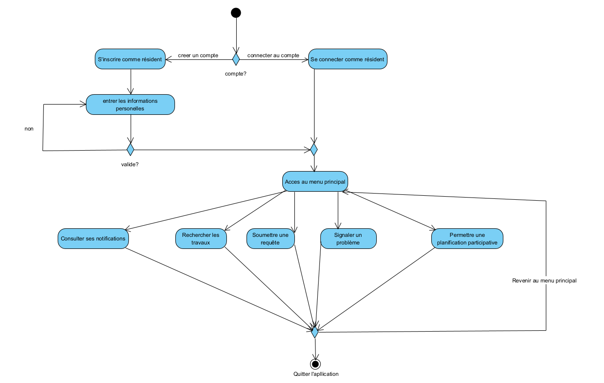
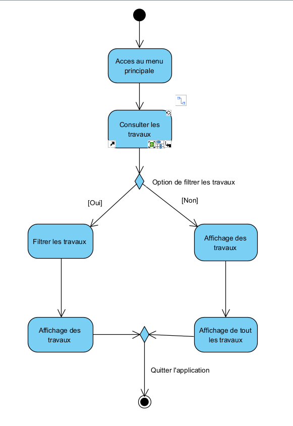
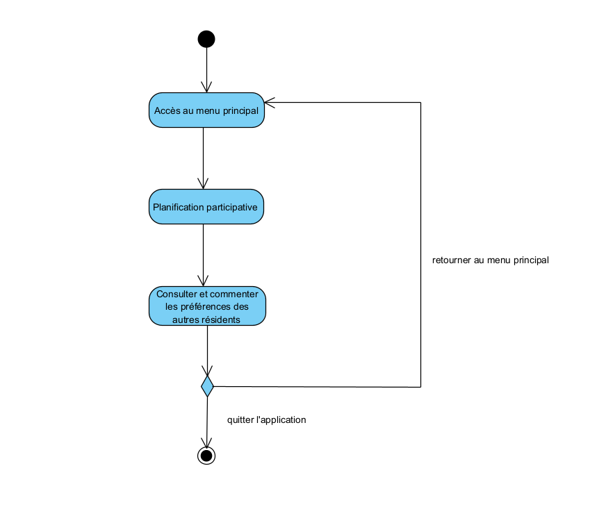
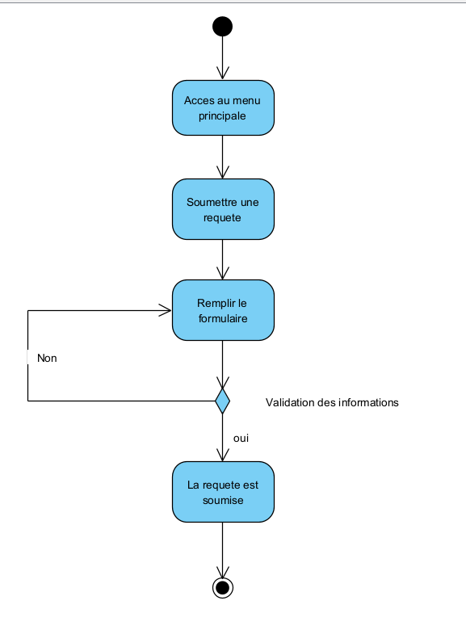
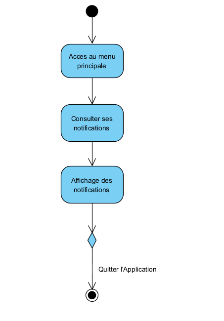
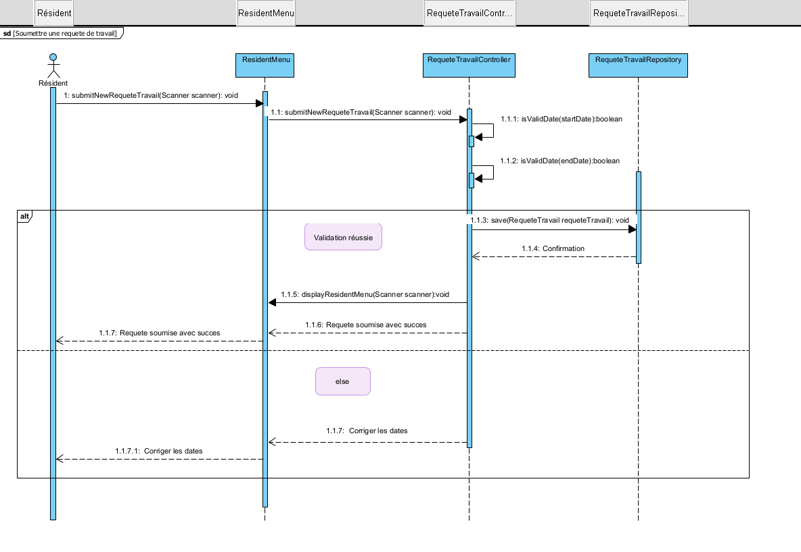
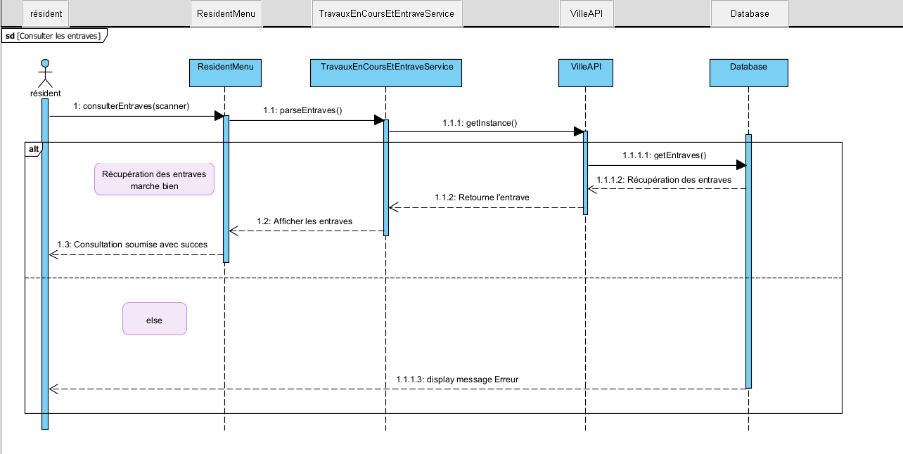
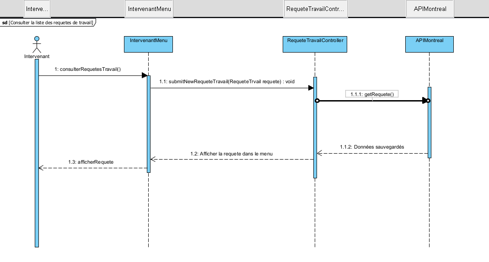
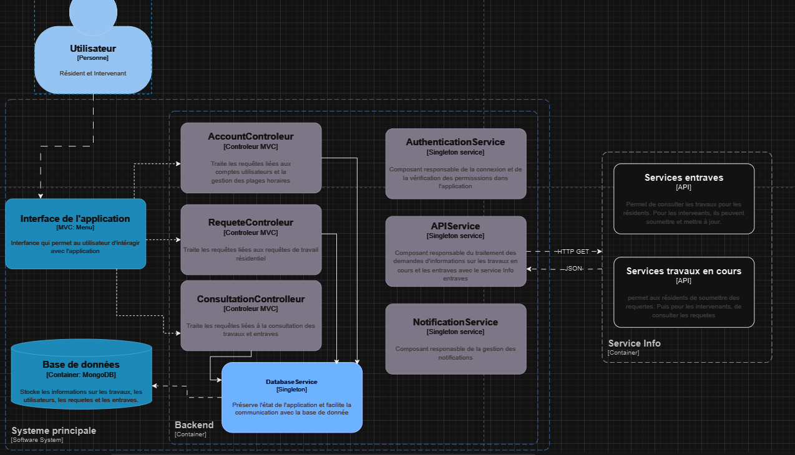

Cadre du projet
Introduction
L'application MaVille permet aux résidents et intervenants de Montréal de mieux gérer et suivre les travaux publics et privés. Les citoyens peuvent s'inscrire, consulter les travaux en cours ou à venir, recevoir des notifications personnalisées et soumettre des requêtes ou signaler des problèmes. Les intervenants peuvent également soumettre et mettre à jour des projets de travaux, favorisant ainsi une meilleure coordination et communication pour minimiser les impacts sur la vie quotidienne.
Échéancier
Lien vers l'échéancier suivant détaille les étapes clés pour le développement de l'application MaVille : Échéancier 
Exigences
Après avoir terminé notre analyse des exigences et schématisé notre application, nous avons créé ce glossaire pour clarifier la définition de certains termes liés à notre application MaVille.
Glossaire
- Application MaVille
- L'application MaVille est une plateforme destinée à la gestion et à la communication des travaux publics et privés à Montréal. Elle permet aux résidents de consulter les travaux en cours ou prévus, de soumettre des requêtes, de recevoir des notifications personnalisées et de participer à la planification des travaux dans leur quartier.
- Info entraves et travaux
- Service fournissant des informations sur les entraves routières et les travaux en cours à Montréal. Ce service permet aux résidents de s'informer sur les perturbations causées par les projets de la ville, des partenaires, des promoteurs immobiliers, des entrepreneurs privés et des particuliers.
- Code de la ville
- Ensemble de règlements et de lois établis par la Ville de Montréal régissant les travaux publics et privés, incluant les normes de sécurité, les procédures d'autorisation et les critères de conformité pour les intervenants réalisant des projets dans la municipalité.
- Résident
- Utilisateur principal de l'application MaVille, qui peut consulter les travaux, soumettre des requêtes, recevoir des notifications et participer à la planification des travaux dans son quartier.
- Intervenant
- Professionnel ou entité responsable de la gestion ou de la réalisation des travaux. Les intervenants peuvent soumettre de nouveaux projets, consulter les requêtes des résidents et répondre aux besoins de planification et de coordination des travaux.
- Travaux publics
- Projets d'infrastructure entrepris par des organismes publics, tels que la Ville de Montréal, impliquant des modifications aux routes, bâtiments publics, systèmes de transport ou autres infrastructures municipales.
- Travaux privés
- Projets de construction ou de rénovation réalisés par des particuliers ou des entreprises sur des terrains ou bâtiments privés, pouvant impacter l'environnement urbain et la circulation.
- Type de travaux
- Catégorisation des projets de travaux selon leur nature, tels que travaux routiers, travaux de gaz ou électricité, construction ou rénovation, entretien paysager, travaux liés aux transports en commun, travaux de signalisation et éclairage, travaux souterrains, travaux résidentiels, entretien urbain, et entretien des réseaux de télécommunication.
- Statut du projet
- État actuel d'un projet de travaux, pouvant être "Prévu", "En cours", "Suspendu" ou "Terminé". Ce statut permet aux utilisateurs de suivre l'évolution et la progression des travaux planifiés.
- Projet
- Initiative de travaux publics ou privés visant à modifier ou améliorer une infrastructure spécifique à Montréal. Chaque projet inclut des informations détaillées telles que le titre, la description, le type de travaux, les quartiers et rues affectés, les dates de début et de fin, ainsi que l'horaire des travaux.
- Notification personnalisée
- Message envoyé à l'utilisateur en fonction de ses préférences et de sa localisation, pour l'informer des travaux en cours ou à venir dans son quartier ou sur une rue spécifique.
- Planification participative
- Processus permettant aux résidents de contribuer à la prise de décision concernant les travaux dans leur quartier, en exprimant leurs préférences et leurs opinions sur les plages horaires préférées pour la réalisation des travaux.
- Type de problème
- Catégorie définissant la nature des problèmes signalés par les résidents, tels que les infrastructures défectueuses (trous dans la chaussée, pannes d'éclairage), les nuisances liées aux chantiers (bruit excessif, pollution), ou tout autre problème affectant la qualité de vie dans le quartier.
- Signaler un problème
- Action permettant aux résidents de notifier la Ville de Montréal d'un problème spécifique dans leur quartier. Lors du signalement, le résident doit fournir une description précise, la localisation exacte et la catégorie du problème pour assurer un suivi efficace et une résolution appropriée.
Cas d'utilisation
Notes à propos du diagramme
- Acteur principal : Résident, car l'application est fait pour donner
le droit aux résidents de donner leurs avis sur les travaux en cours
et futurs.
- Acteur principale : Intervenant, car les intervenants joue un rôle
de support pour les résidents seulement, l'application n'a pas été
conçue pour eux.
- Choix des relations :
1. "Soumettre un nouveau projet de travaux" inclus
"Recevoir une notification"
2. "Mettre à jour des informations de chantier" inclus
"Recevoir une notification"
3. "Soumettre sa candidature" inclus
"Recevoir une notification"
4. "Consulter les travaux" est une extension de
"Rechercher des travaux"
5. "Filtrer des travaux" est une extension de
"Rechercher des travaux"
6. "Consulter ses notifications" est une extension de
"Modifier son profil"
7. "Répondre aux requêtes" est une extension de
"Consulter la liste des requêtes de travail"
Scénarios
Scénario principal
- Le client accède à l'application
- Le client sélectionne l'option d'inscription
- Le client entre les informations nécessaires
- Le système valide les informations
Scénarios alternatifs
Scénario principal
- Le client accède à l'application
- Le client choisit l'option de recherche de travaux
- Le système affiche les travaux en cours et à venir
Scénarios alternatifs
Scénario principal
- Le client accède à l'application
- Le client choisit l'option de planification participative
- Le client fournit une plage horaire pour les travaux dans son quartier
- Le client consulte les préférences des autres résidents
- Le client partage son avis sur les travaux terminés
Scénarios alternatifs
Scénario principal
- Le client accède à l'application
- Le client choisit l'option de signalement de problèmes
- Le client entre les informations nécessaires
Scénarios alternatifs
Scénario principal
- Le client accède à l'application
- Le client choisit l'option de personnalisation des notifications
- Le client personnalise ses notifications
- Le client s'abonne aux notifications pour les travaux de son choix
Scénarios alternatifs
Scénario principal
- Le client accède à l'application
- Le client choisit l'option de soumission de requête
- Le client entre les informations nécessaires
- Le client soumet la requête de travail
Scénarios alternatifs
Scénario principal
- Le professionnel accède à l'application
- Le professionnel sélectionne l'option d'inscription
- Le professionnel entre les informations nécessaires
- Le système valide les informations
Scénarios alternatifs
Scénario principal
- Le professionnel accède à l'application
- Le professionnel sélectionne l'option de soumission des projets
- Le professionnel entre les informations nécessaires
- Le système valide la requête
Scénarios alternatifs
Scénario principal
- Le professionnel accède à l'application
- Le professionnel sélectionne l'option de consultation des requêtes
- Le système affiche la liste des requêtes
Scénarios alternatifs
Scénario principal
- Le professionnel accède à l'application
- Le professionnel sélectionne l'option de mise à jour des informations
- Le professionnel entre les informations nécessaires
Scénarios alternatifs
Diagramme d'activités
Diagramme d'activité : La boucle principale (connexion/inscription)
Diagramme d'activité : Consulter les travaux
Diagramme d'activité : Planification participative
Diagramme d'activité : Soumettre une requête
Diagramme d'activité : Signaler un problème

Diagramme d'activité : Consulter les notifications
Diagramme de classes

Diagramme de séquence
Diagramme de séquence - Intervenant
Diagramme de séquence - Resident (Service Entrave)
Diagramme de séquence - Intervenant (Service Requête)
Architecture du système
Choix de design
Dans la conception de l'application MaVille, nous avons intégré des principes d'architecture logicielle essentiels pour optimiser la maintenance et l'évolutivité. L'abstraction est réalisée à travers une structure de dossiers claire, où chaque module (Modèle, Vue, Contrôleur, Service, Repository) encapsule des fonctionnalités spécifiques. Cette organisation réduit le couplage entre les composants, permettant des modifications ou des améliorations dans une partie du système sans impacter les autres. La cohésion est renforcée par des classes bien définies au sein des dossiers qui regroupent des fonctionnalités connexes, comme la gestion des utilisateurs, la manipulation des requêtes de travail et l'interaction avec la base de données MongoDB. Cette encapsulation aide à protéger l'intégrité des données et facilite la gestion des dépendances via Maven, garantissant ainsi une intégration fluide et une interopérabilité accrue avec d'autres systèmes, par exemple les API de la Ville de Montréal. Enfin, la flexibilité et la modularité sont soutenues par l'utilisation de Maven pour la configuration des dépendances et par des repositories dédiés qui abstraient les opérations CRUD, ce qui simplifie l'extension du système pour inclure de nouvelles fonctionnalités ou intégrations sans perturber l'architecture existante.
Choix de design
Dans la conception de l'application MaVille, nous avons intégré des principes d'architecture logicielle essentiels pour optimiser la maintenance et l'évolutivité. L'abstraction est réalisée à travers une structure de dossiers claire, où chaque module (Modèle, Vue, Contrôleur, Service, Repository) encapsule des fonctionnalités spécifiques. Cette organisation réduit le couplage entre les composants, permettant des modifications ou des améliorations dans une partie du système sans impacter les autres. La cohésion est renforcée par des classes bien définies au sein des dossiers qui regroupent des fonctionnalités connexes, comme la gestion des utilisateurs, la manipulation des requêtes de travail et l'interaction avec la base de données MongoDB. Cette encapsulation aide à protéger l'intégrité des données et facilite la gestion des dépendances via Maven, garantissant ainsi une intégration fluide et une interopérabilité accrue avec d'autres systèmes, par exemple les API de la Ville de Montréal. Enfin, la flexibilité et la modularité sont soutenues par l'utilisation de Maven pour la configuration des dépendances et par des repositories dédiés qui abstraient les opérations CRUD, ce qui simplifie l'extension du système pour inclure de nouvelles fonctionnalités ou intégrations sans perturber l'architecture existante.
Analyse
Risques
- Risque de sécurité
Justification : L'application "MaVille" traite des données sensibles des utilisateurs, telles que les informations personnelles (nom, adresse, courriel) et les identifiants de connexion. Une faille de sécurité pourrait permettre des accès non autorisés, compromettant la confidentialité et l'intégrité des données. Cela pourrait entraîner une perte de confiance des utilisateurs, des sanctions légales et des dommages réputationnels importants.
Solution : Mettre en œuvre des protocoles de sécurité robustes, incluant le chiffrement des données en transit et au repos, l'authentification à deux facteurs (2FA) pour les utilisateurs, et des audits de sécurité réguliers. Utiliser des frameworks sécurisés et appliquer les meilleures pratiques de développement sécurisé pour minimiser les vulnérabilités. Former les développeurs et les administrateurs à la sécurité des applications. - Fuite de données
Justification : La divulgation d'informations sensibles peut nuire à la réputation de l'application et violer les réglementations sur la protection des données, telles que le Règlement Général sur la Protection des Données (RGPD). Cela peut entraîner des amendes significatives et une perte de confiance des utilisateurs, affectant l'adoption et la pérennité de l'application.
Solution : Utiliser le chiffrement des données sensibles, tant en transit qu'au repos. Implémenter des contrôles d'accès stricts basés sur les rôles des utilisateurs pour limiter l'accès aux informations sensibles uniquement aux personnes autorisées. Surveiller et enregistrer les accès aux données pour détecter toute activité suspecte. Effectuer régulièrement des tests de pénétration et des audits de sécurité pour identifier et corriger les failles potentielles. - Performance de l'application
Justification : Des temps de réponse lents ou des plantages peuvent frustrer les utilisateurs, réduisant ainsi l'engagement et l'adoption de l'application. Une mauvaise performance peut également limiter la capacité de l'application à gérer un grand nombre d'utilisateurs simultanément, ce qui est crucial pour une application destinée à une large population urbaine comme Montréal.
Solution : Optimiser le code et les requêtes de base de données pour améliorer les temps de réponse. Utiliser des techniques de mise en cache pour réduire la charge sur le serveur et accélérer l'accès aux données fréquemment consultées. Adopter une architecture scalable, par exemple en utilisant des microservices ou des services cloud évolutifs, pour s'adapter à l'augmentation du nombre d'utilisateurs et de projets. Mettre en place une surveillance continue des performances et ajuster les ressources serveur en fonction des besoins. - Coordination des projets
Justification : Une mauvaise coordination entre les intervenants peut entraîner des retards, des conflits de ressources et une gestion inefficace des projets. Cela peut affecter négativement la qualité et la ponctualité des travaux publics, augmentant ainsi les frustrations des résidents et diminuant la confiance dans l'application.
Solution : Développer et intégrer des outils de gestion de projet robustes dans l'application, permettant une meilleure planification, communication et suivi des projets. Faciliter la collaboration en temps réel entre les intervenants et les résidents en fournissant des tableaux de bord interactifs, des calendriers partagés et des notifications automatiques pour les mises à jour de projet. Implémenter des fonctionnalités de gestion des tâches et des ressources pour assurer une allocation efficace et éviter les chevauchements ou les conflits. - Informations erronées
Justification : Des données inexactes peuvent conduire à de mauvaises décisions de la part des utilisateurs et des administrateurs, nuire à la planification des travaux et diminuer la fiabilité de l'application. Cela peut également engendrer une mauvaise allocation des ressources et des retards dans la réalisation des projets.
Solution : Mettre en place des mécanismes de validation et de vérification des données lors de la saisie et de la mise à jour des informations. Former les utilisateurs à entrer des données précises et fournir des interfaces intuitives pour réduire les erreurs de saisie. Utiliser des sources de données fiables et automatiser autant que possible la collecte et la mise à jour des données pour minimiser les erreurs humaines. Implémenter des audits réguliers des données pour identifier et corriger les informations erronées.
Besoins non-fonctionnelles
- Sécurité des données
Justification : La protection des données sensibles des utilisateurs est essentielle pour maintenir leur confiance et se conformer aux réglementations telles que le RGPD. L'application doit implémenter des mécanismes de chiffrement robustes pour les informations personnelles (adresse, courriel, mot de passe) tant en transit qu'au repos. De plus, une authentification forte, incluant une authentification à deux facteurs (2FA), doit être mise en place pour les résidents et les intervenants afin de prévenir les accès non autorisés et renforcer la sécurité globale de l'application. - Performance
Justification : Pour garantir une expérience utilisateur fluide et satisfaisante, l'application doit répondre rapidement aux requêtes, même lors des pics de trafic. Des temps de réponse courts sont cruciaux pour éviter la frustration des utilisateurs et assurer une utilisation efficace des fonctionnalités. Cela nécessite une optimisation du code, une gestion efficace des ressources serveur, et l'utilisation de techniques de mise en cache appropriées pour minimiser les délais de chargement. - Scalabilité
Justification : L'application doit être conçue pour évoluer en fonction de l'augmentation du nombre d'utilisateurs et de projets sans compromettre les performances. Cela implique l'adoption d'une architecture modulaire et distribuée, permettant d'ajouter facilement des ressources serveur ou de répartir la charge de travail. La scalabilité garantit que l'application peut répondre aux besoins croissants des résidents et des intervenants tout en maintenant une performance optimale. - Interface utilisateur intuitive
Justification : Une interface claire et facile à utiliser est essentielle pour assurer une adoption rapide de l'application par les utilisateurs. Une conception intuitive réduit les risques d'erreurs de saisie et améliore l'engagement des utilisateurs en rendant les fonctionnalités facilement accessibles et compréhensibles. Cela nécessite une attention particulière à l'ergonomie, à la navigation simplifiée et à la cohérence visuelle de l'interface. - Maintenabilité
Justification : L'application doit être facile à maintenir et à mettre à jour pour corriger rapidement les erreurs, ajouter de nouvelles fonctionnalités ou améliorer les existantes. Une architecture modulaire, un code bien documenté et des pratiques de développement telles que le respect des principes SOLID et l'utilisation de tests automatisés facilitent la maintenabilité. Cela permet également de réduire les coûts et le temps nécessaires pour effectuer des modifications, garantissant ainsi la pérennité et la qualité de l'application à long terme.
Besoins matériels
- Serveurs : Serveurs cloud scalables (AWS, Azure) pour héberger l'application Java et la base de données MongoDB.
- Mémoire et stockage : Capacité suffisante pour stocker les données des utilisateurs et leurs requêtes, avec possibilité d'évolution.
- Réseaux : Réseau fiable et bande passante adéquate pour assurer des connexions stables entre les utilisateurs et le système.
- Postes de travail : Ordinateurs performants pour les développeurs et administrateurs, avec environnement de développement Java et MongoDB.
- Compatibilité utilisateurs : Support pour différents appareils (smartphones, tablettes, ordinateurs) avec des interfaces utilisateur adaptées.
- VSCode : Environement de développement de l'application (compatible avec le reste de nos outils)
- Git/Github : Environement pour le dépo/sauvegarde du code et facilité le travaille de développement en équipe et de présentation de l'application (et de son code)
Solution de stockage
Comment allons-nous stocker nos données ?
Nous envisageons utiliser la base de données MongoDB, car certains membres de l'équipe sont déjà familier avec l'outils. De plus, nous l'avons choisi pour sa flexibilité et sa capacité à gérer des données non structurées, ce qui correspond bien à la variété d'informations que nous devons stocker, telles que les projets de travaux, les requêtes des résidents, et les notifications personnalisées. MongoDB permet également un développement agile grâce à son modèle de données orienté documents, ce qui facilite l'intégration avec notre architecture Maven. De plus, sa scalabilité et ses performances optimisées pour les grandes quantités de données s'alignent avec nos besoins futurs en termes d'expansion de l'application.
Nous allons avoir besoins d'une connexion à l'aide API (serveur) pour communiquer avec la base de données, d'adresses IP autorisés (pour la sécurité jusqu'au déployement), d'ordinateurs se connectant à l'Internet, notre architecture de notre application soit compatible (se qui est le cas, car nous utilisont Maven), puis de la plateforme MongoDB.
Solution d'intégration
Pour l'intégration de l'application MaVille avec les systèmes existants tels que Info-entraves et les services de gestion des travaux, nous avons analysé les besoins de synchronisation des données en temps réel pour garantir une coordination fluide entre les différents acteurs. MaVille vise à centraliser l'information concernant les travaux publics et privés tout en offrant une plateforme collaborative pour les résidents et les intervenants. Pour faciliter cette intégration, il est essentiel d'établir des API robustes qui permettent de récupérer et de partager les informations sur les travaux en cours, les fermetures de routes, et les mises à jour en direct. La compatibilité avec les systèmes municipaux, tout en respectant les normes de sécurité et d'interopérabilité, est également cruciale pour assurer une gestion harmonisée et fiable des projets, réduisant ainsi les risques de duplication des données ou de conflits de planification.
Prototype
Pour éxécuter le prototype :
1. cd ~/MaVille_Groupe9_IFT-2255/app/MaVille
2. mvn exec:java -Dexec.mainClass="com.maville.app.App"
ou
1. cd ~/MaVille_Groupe9_IFT-2255/app/MaVille/target
2. java -jar MaVille-1.0-SNAPSHOT-shaded.jar
Les comptes préconfigurés pour se connecter :
1 des 3 résidents enregisté dans notre base de données (pour vos tests):
Adresse couriel : ross@gmail.com
Mot de passe : 123
1 des 3 intervenants enregistré dans notre base de données (pour vos tests):
Adresse couriel : rachel@gmail.com
Mot de passe : 123
Pour exécuter les tests unitaires :
1. cd ~/MaVille_Groupe9_IFT-2255/app/MaVille
2. mvn clean test
Lien vers documentation JavaDoc :
- localhost/app/MaVille/target/site/apidocs/index.html
Lien vers la documentation JaCoco :
- localhost/app/MaVille/target/site/jacoco/jacoco-sessions.html